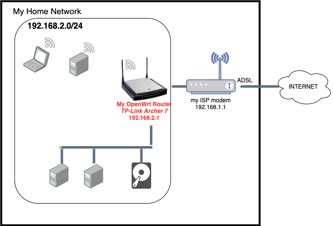
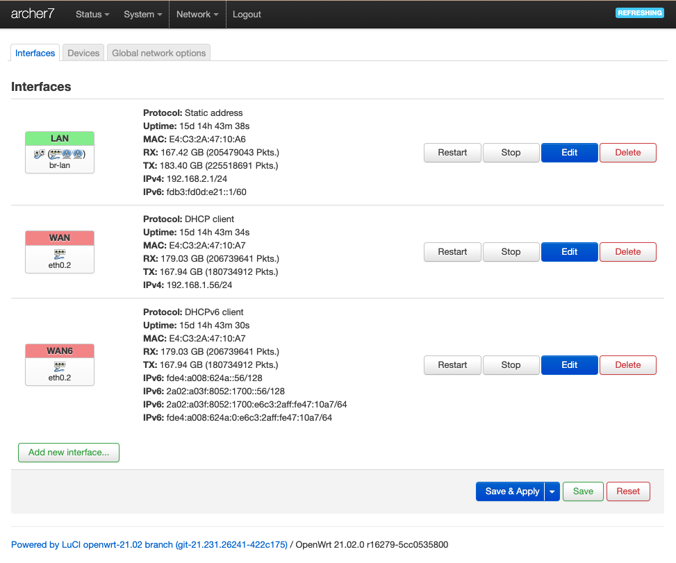
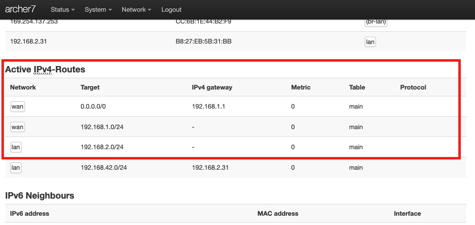
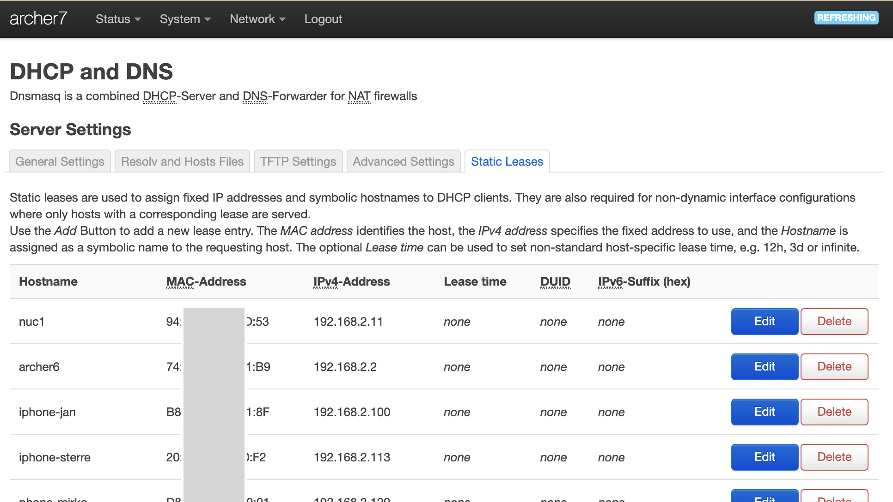
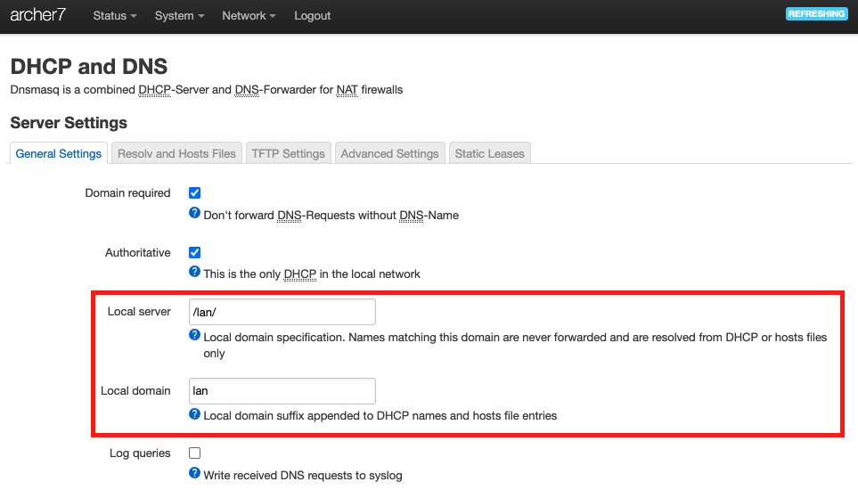

My OpenWrt Router
Router Model
Model : TP-Link Archer C7 Dual Band Gigabit WiFi-router (1300 Mbps (5 GHz) + 450 Mbps (2,4 GHz), 5 Gigabit LAN-port, 1 USB 2.0-port) Black
Price: 56 € (nov 2021)
Memory: 120 MB
Architecture: Qualcomm Atheros QCA956X ver 1 rev 0
Flashed with OpenWrt
Firmware version : OpenWrt 21.02.0 r16279-5cc0535800 / LuCI openwrt-21.02 branch git-21.231.26241-422c175
The OpenWrt Project is a Linux operating system targeting embedded devices (typically wireless routers).
Tip: Assure you buy a router that is in the list of OpenWrt supported devices.
Location in my home network

Why ?
- Flashing a router with OpenWrt was on my nerd bucketlist
- Learn about routers, networking and OpenWrt
- Have full control to configure your home network
- This is especially relevant if your ISP modem doesn't allow to configure all things
- Makes it easier to switch to new ISP or new ISP modem (e.g. switch from ADSL to fiber)
- Maybe to get better WiFi (as your are using the WiFi of the OpenWrt Router iso of the ISP modem)
Configuration
I don't remember everything I did 2 years ago, but a lot of information can be found at:
Think twice before activating any changes that might make your router inaccessible !
It is of course possible to make changes so that you can't access your OpenWrt router anymore from any device. In that case it is also not possible to correct the issue without doing a reset and
start all over. (It happened me once)
The configurations described below can also be performed on most routers/ISP modems !
Ignored IPv6
I ignored IPv6 configuration. IPv4 is sufficient for me and I also don't know much about IPv6.
GUI (web interface)
OpenWrt comes with a very nice GUI. Almost everything can be configured by this GUI.
Command-line (ssh)
Besides the GUI it has also a command line interface (UCI) which can be accessed via SSH.
DEMO Access the router via ssh
2 examples of uci commands :
uci helpuci show wireless.radio1
Configure routing / network
The main configuration steps (as I remember it) to setup my 192.168.2.0/24 network
Configure Network>Interfaces

Firewall configuration
Below settings opens firewall in both directions + enables masquerading in both directions.
- allows to ping from OpenWrt Router LAN to ISP modem LAN
- allows to access the internet from OpenWrt Router LAN
- doesn't allow to ping OpenWrt Router LAN from ISP modem LAN
- allows to access OpenWrt Router via its ISP modem LAN IP address (http://192.168.1.56)

Configure IPv4-Routes
The routes can be configured via menu Status > Routes. The relevant IPv4 routes are put in a red box.
I think that I didn't configure those routes, by default they were properly setup.

Configure WiFi
Show my OpenWrt WiFi Configuration
Show my actual WiFi configuration (menu Network > Wireless)
Configure Static Leases
Instead of working with /etc/hosts files and configuring static IP addresses for each device, you can also define static leases (DHCP). So the DHCP server of the router will automatically assign a static IP address and hostname based on the MAC address.

DEMO OpenWrt Static Leases configuration
Demo the assignment of a static lease
Some devices (e.g. iphones) change MAC address each time they connect.
So this approach of static leases only works if the MAC address doesn't change. Iphones when connecting to wifi network are each time using a different MAC address. This makes that DHCP can not use the MAC address to assign a specific IP address. To overcome this issue you must disable this feature for your home wifi. This can be disabled on your iphone through following steps:
- Goto Settings > Wi-Fi
- click on (i) - information of
<your home wifi network> - disable the check box
Private Wi-Fi Address - ... and do the same steps for
<your home 5G wifi network>if it exists
Configure Local domain .lan
The below settings will set the local domain to .lan. So the full name of the hosts defined by the static leases is <hostname>.lan (e.g. nuc1.lan)

Here below a log of hostname and ping nuc1 command entered in a terminal window on my mac-book connected to my home network. The hostname, domain and ip address are all configured in my OpenWrt router (see above).
mac-jan:tmp jan$ hostname
mac-jan.lan
mac-jan:tmp jan$ ping nuc1
PING nuc1.lan (192.168.2.11): 56 data bytes
64 bytes from 192.168.2.11: icmp_seq=0 ttl=64 time=35.316 ms
64 bytes from 192.168.2.11: icmp_seq=1 ttl=64 time=3.348 ms
Issues
- #1 Once or twice a day cannot resolve hostname
nuc2.lanin docker container - it is not yet clear if this is caused by this setup or not.
Conclusion
The outcome of this configuration:
- I have created my own
192.168.2.0/24home network (domain.lan) - All (relevant) devices automatically get a static IPv4 address and a hostname via DHCP
- each device in my home network can reach any of the other devices in my home network by just using its hostname (or hostname
.lan) - All of this is configured on my OpenWRT router
- so no specific configuration (E.g.
/etc/hosts) is needed on any of the devices in my home network.
- so no specific configuration (E.g.
OpenWrt has a ton of features and additional software packages that I didn't use.